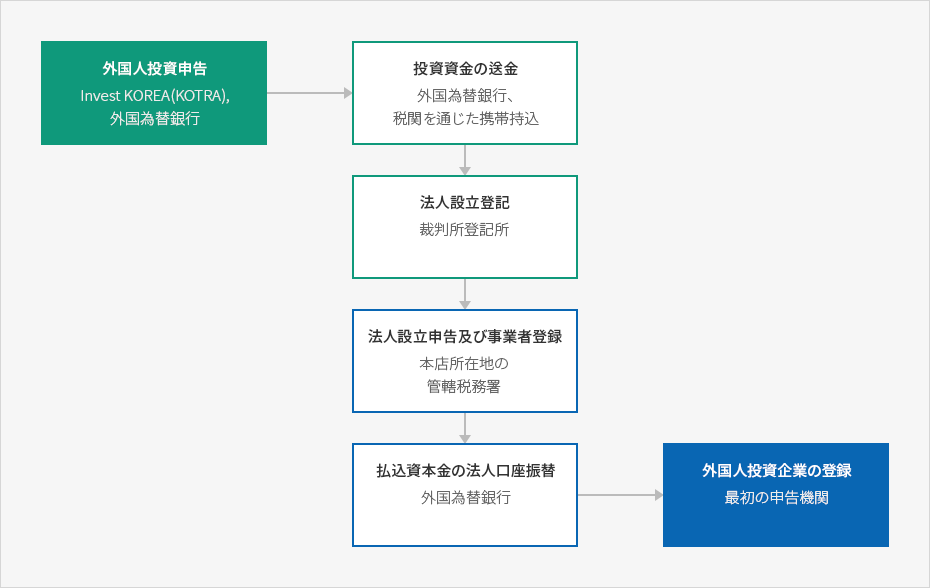

外国人投資手続き
- Home
- 投資ガイド
- 投資手続き
- 外国人投資手続き
外国人投資手続き
外国人投資企業に関する手続きは大きく外国人投資申告、投資資金送金、法人設立登記および事業者登録、外国人投資企業登録の4段階により行われます。韓国人による法人設立手続きに比較すると、外国人は「外国人投資申告」と「外国人投資企業登録」の2つが追加され、他は基本的に同様な手続きとなっています。但し、個人事業者として登録する場合は「法人設立登記」の手続きは不要です。
外国人投資手続き


외국인투자절차
- 외국인투자 신고(Invest KOREA(KOTRA), 외국환은행)
- 투자자금 송금(외국환은행, 세관휴대반입)
- 법인설립 등기(법원 등기소), 법인설립신고 및 사업자등록(본점소재지 관활세무서)
- 납입자본금의 법인계좌 이체(외국환은행)
- 외국인투자기업등록(최초 신고기관)